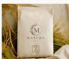
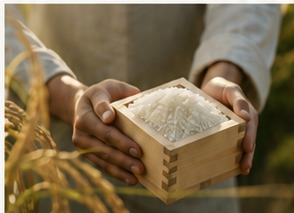
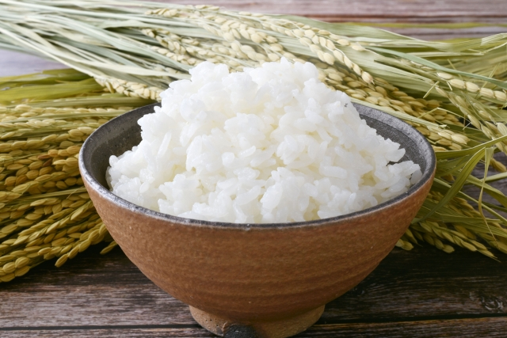
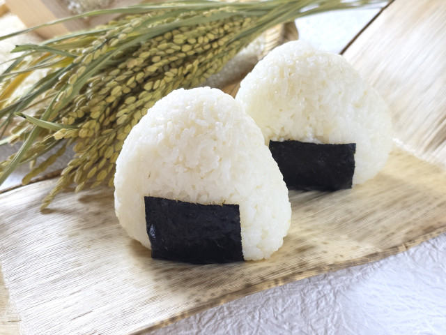

ABOUT
私たちは、もともと大工の仕事をしてきました。
家づくりで大切にしてきたのは、丁寧な手仕事と、日々の暮らしへの想いを形にすること。
その想いは、米づくりにも通じています。
一粒一粒に心を込め、家族や大切な人に安心して食べてもらえるお米を育てています。
2つの品種をご用意しました。お好みのお米と内容量をお選びください。
玄米・精米済みからお選びいただけます

ほどよい粘りと、やさしい甘み。
ほどよい粘りとほのかな甘み、炊き上がりの美しいツヤが特徴のお米です。毎日のごはんとして、ご家族みんなでお楽しみいただけます。
玄米・精米済みからお選びいただけます

広島の気候に育まれた、おいしいお米。
暑さに強く、品質の良さとおいしさを兼ね備えた品種です。広島の豊かな自然の中で育つお米を、毎日の食卓にお届けします。
土の力を育てることから、米づくりは始まります。
きれいな水と、豊かな自然が、おいしいお米を育てます。
一つひとつの工程を、丁寧に、心を込めて。

ご入金確認後、３～４日程度で準備が整い次第発送いたします。
発送前であれば対応できる場合があります（基本的にはキャンセルできません）。お問い合わせください。